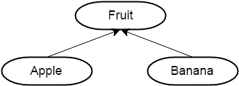
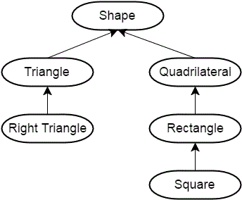

24.1 — Introduction à l'héritage
Dans le chapitre précédent, nous avons abordé la composition d'objets, où des classes complexes sont construites à partir de classes et de types plus simples. La composition d'objets convient parfaitement pour construire de nouveaux objets qui entretiennent une relation de type « a un » (has-a) avec leurs parties. Cependant, la composition d'objets n'est qu'une des deux grandes manières qu'offre le C++ pour construire des classes complexes. La seconde passe par l'héritage, qui modélise une relation de type « est un » (is-a) entre deux objets.
Contrairement à la composition d'objets, qui consiste à créer de nouveaux objets en combinant et en reliant d'autres objets, l'héritage consiste à créer de nouveaux objets en acquérant directement les attributs et les comportements d'autres objets, puis en les étendant ou en les spécialisant. Comme la composition, l'héritage est omniprésent dans la vie réelle. Lorsque vous avez été conçu, vous avez hérité des gènes de vos parents et acquis des caractéristiques physiques de chacun d'eux, mais vous y avez ensuite ajouté votre propre personnalité. Les produits technologiques (ordinateurs, téléphones portables, etc.) héritent des fonctionnalités de leurs prédécesseurs (souvent pour assurer la rétrocompatibilité). Par exemple, le processeur Intel Pentium a hérité de nombreuses fonctionnalités définies par le processeur Intel 486, lequel avait lui-même hérité de fonctionnalités de processeurs antérieurs. Le C++ a hérité de nombreuses fonctionnalités du C, le langage sur lequel il est fondé, et le C a hérité de nombre de ses fonctionnalités des langages de programmation qui l'ont précédé.
Prenons l'exemple des pommes et des bananes. Bien que pommes et bananes soient des fruits différents, elles ont en commun d'être des fruits. Et parce que pommes et bananes sont des fruits, la logique la plus simple nous dit que tout ce qui est vrai des fruits est aussi vrai des pommes et des bananes. Par exemple, tous les fruits ont un nom, une couleur et une taille. Par conséquent, les pommes et les bananes ont elles aussi un nom, une couleur et une taille. On peut dire que les pommes et les bananes héritent (acquièrent) toutes les propriétés des fruits parce qu'elles sont des fruits. Nous savons également que les fruits subissent un processus de maturation, au terme duquel ils deviennent comestibles. Comme les pommes et les bananes sont des fruits, nous savons aussi qu'elles hériteront du comportement de maturation.
Représentée sous forme de diagramme, la relation entre pommes, bananes et fruits pourrait ressembler à ceci :

Ce diagramme définit une hiérarchie.
Hiérarchies
Une hiérarchie est un diagramme qui montre comment différents objets sont liés entre eux. La plupart des hiérarchies montrent soit une progression dans le temps (386 -> 486 -> Pentium), soit une catégorisation allant du général au particulier (fruit -> pomme -> honeycrisp). Si vous avez déjà suivi un cours de biologie, la célèbre classification en domaine, règne, embranchement, classe, ordre, famille, genre et espèce définit une hiérarchie (du général au particulier).
Voici un autre exemple de hiérarchie : un carré est un rectangle, qui est un quadrilatère, qui est une forme. Un triangle rectangle est un triangle, qui est également une forme. Représentée sous forme de diagramme hiérarchique, cette relation ressemblerait à ceci :

Ce diagramme va du général (en haut) au particulier (en bas), chaque élément de la hiérarchie héritant des propriétés et des comportements de l'élément situé au-dessus de lui.
Un aperçu de la suite
Dans ce chapitre, nous explorerons les bases du fonctionnement de l'héritage en C++.
Dans le prochain chapitre, nous verrons comment l'héritage permet le polymorphisme (l'un des grands mots à la mode de la programmation orientée objet) grâce aux fonctions virtuelles.
Au fil de notre progression, nous évoquerons également les principaux avantages de l'héritage, ainsi que certains de ses inconvénients.
Source originale : https://www.learncpp.com/cpp-tutorial/introduction-to-inheritance/